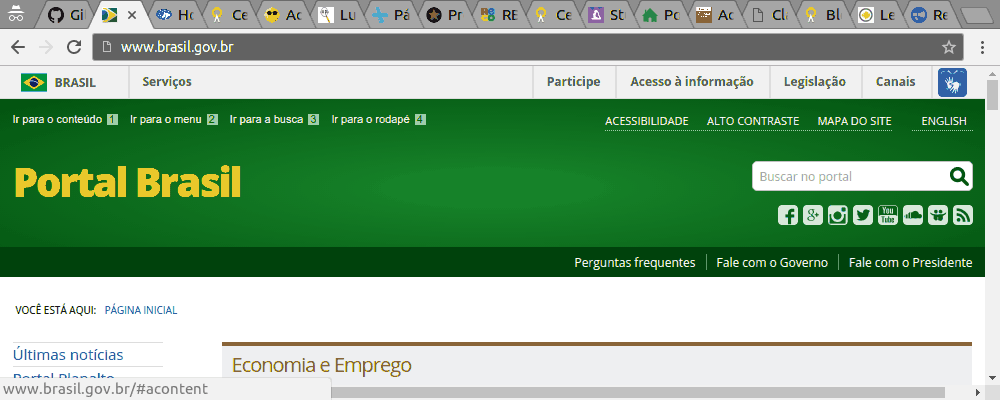
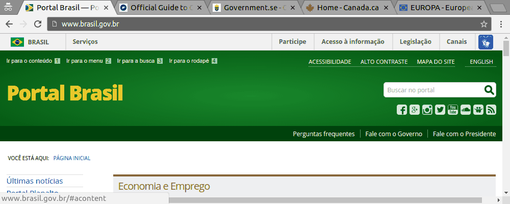

A Barra de Acessibilidade tem que morrer
Guia ilustrado do porque ....
Reza a lenda que uma das formas de ganhar prêmios de acessibilidade do governo é necessário copiar a barra de acessibilidade

Alternativas ao uso da barra de acessibilidade
